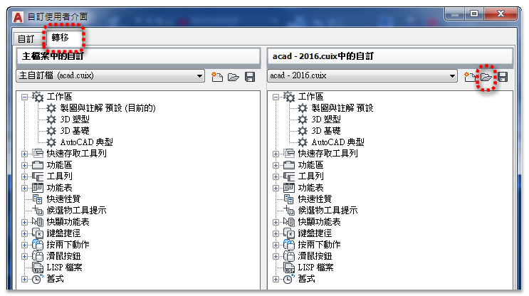
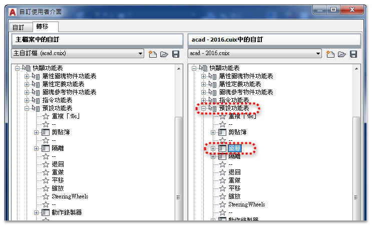
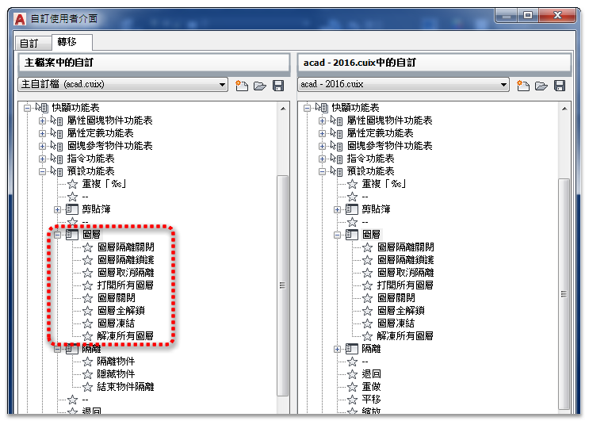

大家是否有想過平常繪圖工作中，哪一個指令工具格外重要呢？
我覺得是「圖層工具」是最重要的工具之一，若是沒有這方便的工具，我的繪圖速度可是會大大降低～
而每個人使用「圖層工具」的方式皆不同，大部分的人都是點擊「工具列」按鈕方式，有的朋友則是使用「自訂別名PGP」指令輸入方式！
我甚至看過同事自訂為LISP指令，方便作圖時快速KEYIN指令喔～
雖然我很喜歡「指令輸入方式」，但是隨著年紀增長，我已經記不了那麼多的指令，所以圖層工具我仍然使用「功能區面板」按鈕方式，為了加快方便使用，我把它寫入到滑鼠右鍵「快顯功能表」中，以後要用就非常方便！
PS:我也有一本筆記本，幫我記著少用但很重要的「指令及系統變數」喔^_^


最近有些空檔準備把我自訂的LISP工具等外掛，從2016版本轉移到2017版本，因為工具眾多每年都要手動執行這個轉移動作。
剛好借此機會與大家分享，如何從舊版轉移「快顯功能表」的自訂工具到新版本之中。

▼步驟2：在指令行中輸入CUI指令 >> 切換到「轉移」頁籤 >> 開啟舊版*.CUIX檔



▼步驟5：放開滑鼠左鍵後 >> 建立「圖層工具」功能表 >>「套用」>>「關閉」


註：快速使用方式按「滑鼠右鍵」+「鍵盤 W」二次，即「圖層隔離關閉」。
acad - 2016.CUIX下載： https://goo.gl/usLLlk